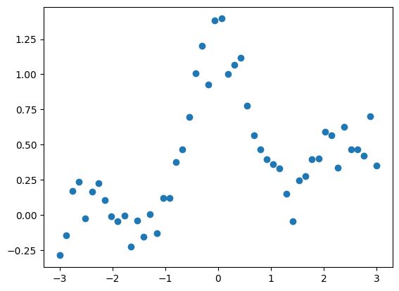
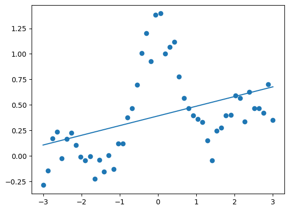
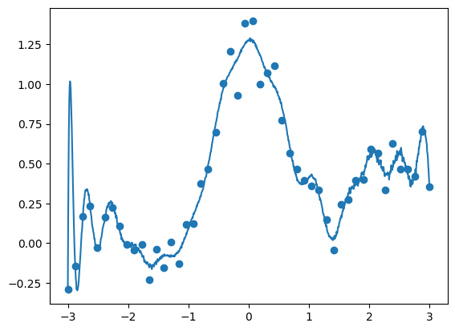
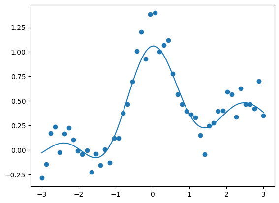
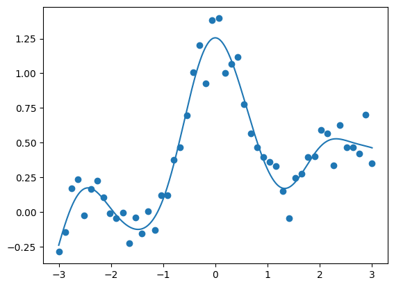
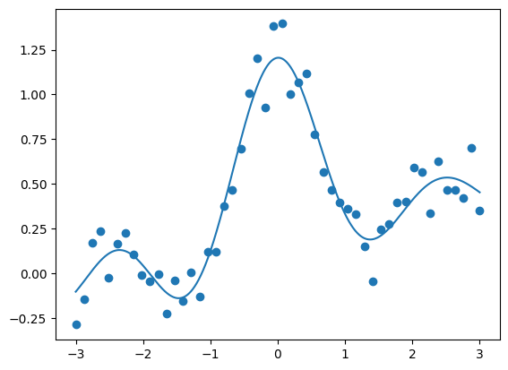

This is sample code for regression model¶
Here the sample codes are shown for several regression model. Basic regression model is LinearRegression.
[88]:
import numpy as np
import pandas as pd
import matplotlib.pyplot as plt
import seaborn as sns
%matplotlib inline
Sample data¶
[89]:
n = 50; N = 1000
x = np.linspace(-3, 3, n)
X = np.linspace(-3, 3, N)
np.random.seed(234)
y = np.sin(np.pi*x) / (np.pi*x) + 0.1*x + 0.4* np.random.random(n)
x = x.reshape(-1,1)
X = X.reshape(-1,1)
y = y.reshape(-1,1)
plt.scatter(x,y)
plt.show()

Linear Regression¶
[90]:
from sklearn import linear_model
reg = linear_model.LinearRegression()
reg.fit(x, y)
Y = reg.predict(X)
print(f'intercept: {reg.intercept_} coefficient: {reg.coef_}')
print(f'Score: {reg.score(x, y)}')
plt.scatter(x,y)
plt.plot(X,Y)
plt.show()
intercept: [0.39166125] coefficient: [[0.09510861]]
Score: 0.16460402247054173

[91]:
import statsmodels.api as sm
x_add = sm.add_constant(x) # 切片は全要素1.0の列を戦闘に追加
model = sm.OLS(y, x_add)
res = model.fit()
Y_pred = res.predict(sm.add_constant(X))
print(res.summary())
plt.scatter(x,y)
plt.plot(X,Y_pred)
plt.show()
OLS Regression Results
==============================================================================
Dep. Variable: y R-squared: 0.165
Model: OLS Adj. R-squared: 0.147
Method: Least Squares F-statistic: 9.458
Date: Thu, 27 Oct 2022 Prob (F-statistic): 0.00347
Time: 22:11:06 Log-Likelihood: -22.385
No. Observations: 50 AIC: 48.77
Df Residuals: 48 BIC: 52.59
Df Model: 1
Covariance Type: nonrobust
==============================================================================
coef std err t P>|t| [0.025 0.975]
------------------------------------------------------------------------------
const 0.3917 0.055 7.167 0.000 0.282 0.502
x1 0.0951 0.031 3.075 0.003 0.033 0.157
==============================================================================
Omnibus: 11.408 Durbin-Watson: 0.268
Prob(Omnibus): 0.003 Jarque-Bera (JB): 11.704
Skew: 1.156 Prob(JB): 0.00287
Kurtosis: 3.525 Cond. No. 1.77
==============================================================================
Notes:
[1] Standard Errors assume that the covariance matrix of the errors is correctly specified.

Kernel Ridge Regression¶
Kernel Ridge Regressionを行う前に、過学習を前提にカーネル回帰を行ってみる。
[92]:
from sklearn.metrics.pairwise import rbf_kernel
kx = rbf_kernel(x, x)
kX = rbf_kernel(X, x)
klr = linear_model.LinearRegression()
klr.fit(kx, y)
ky_pred = klr.predict(kX)
print(f'R2 score: {klr.score(kx,y)}')
plt.scatter(x,y)
plt.plot(X,ky_pred)
plt.show()
R2 score: 0.9656076087611415

次に、誤差として最小二乗に制約をつけた、KernelRidge回帰を行う。
[93]:
from sklearn.kernel_ridge import KernelRidge
krr = KernelRidge(alpha=1.0, kernel='rbf')
krr.fit(x, y)
krr_pred = krr.predict(X)
print(f'R2 score: {krr.score(x,y)}')
plt.scatter(x,y)
plt.plot(X,krr_pred)
plt.show()
R2 score: 0.8856524762384473

パラメータの最適値をGridSearchで探索する
[94]:
from sklearn.model_selection import GridSearchCV
from sklearn.kernel_ridge import KernelRidge
from sklearn.metrics import r2_score
kr = GridSearchCV(
KernelRidge(kernel="rbf", gamma=0.1),
param_grid={"alpha": [1e0, 0.1, 1e-2, 1e-3], "gamma": np.logspace(-2, 2, 5)},
)
kr.fit(x,y)
y_kr = kr.predict(X)
print(f"Best KRR with params: {kr.best_params_} and R2 score: {r2_score(y,kr.predict(x)):.3f}")
plt.scatter(x,y)
plt.plot(X,y_kr)
plt.show()
Best KRR with params: {'alpha': 0.01, 'gamma': 1.0} and R2 score: 0.935

SVR (Support Vector Regression)¶
[95]:
from sklearn.svm import SVR
svr = SVR(kernel='rbf', gamma=1.0)
svr.fit(x, y.ravel())
svr_pred = svr.predict(X)
print(f'R2 score: {svr.score(x,y)}')
plt.scatter(x,y)
plt.plot(X,svr_pred)
plt.show()
R2 score: 0.9233630191274795

[ ]: